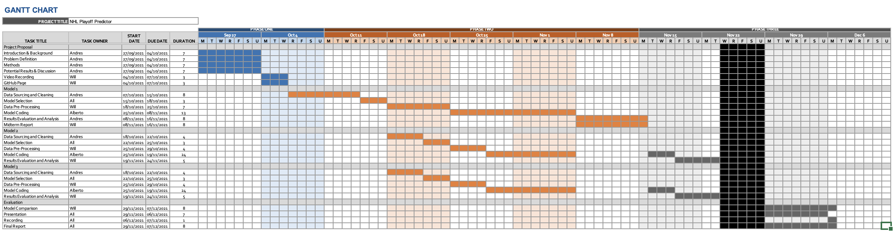

Stock Market Trend Prediction - Midterm Checkpoint
Column
Introduction
Predicting stock market trends is a challenging yet crucial task for investors and financial institutions.
This project aims to develop a machine learning model to forecast short-term stock price movements for
S&P 500 companies using historical market data and sentiment analysis.
Recent studies have explored various machine learning approaches for stock prediction. Jiang et al.
(2021) used LSTM networks for stock price prediction incorporating news sentiment [1]. Patel et al.
(2020) compared various machine learning techniques for stock trend prediction [2]. Feng et al. (2019)
developed a deep learning framework for stock prediction using technical indicators and textual data [3].
We will use a combination of datasets:
- Yahoo Finance API for historical stock price data of S&P 500 companies
- Alpha Vantage News’ API for real-time and historical financial news articles[3]
- Potential other sources (best to worst):
- Web Scraping Yahoo Finance’s top stories
- RSS feeds for quick (less accurate) data
- Financial Reports and SEC Filings to make predictions
Problem Definition
Accurate stock market prediction is crucial for optimizing investment strategies, managing financial risks,
and understanding market dynamics. The challenge lies in developing a model that can effectively
combine numerical time series data with textual sentiment information to predict short-term (1-5 days)
stock price movements.
Methods
We propose the following methods for this project:
Data Preprocessing
- Data Collection: Sources of textual data relevant to stock prediction.
- Text Preprocessing: Cleaning and standardizing the raw text data.
- Feature Extraction: Converting text to numerical features (Bag of Words, TF-IDF, Word Embeddings).
- Sentiment Analysis: Quantifying the sentiment of the text.
- Topic Modeling: Understanding the main themes in the text data.
- Integration with Stock Data: Combining text-derived features with numerical stock data.c
ML Algorithms/Models
- LSTM Neural Network
- Useful for sequential data, this will be ideal for the relation of our data for the forecasting nature of our problem[1].
- Random Forest Classifier
- Multiple decision trees, that outputs the mode, good for when data can be noisy as stocks can.
- Support Vector Machine
- Models used for classification and regression, good for classification of stock trends.
Results and Discussion
Quantitative Measures
- Achieve an accuracy of at least 60% in predicting the direction of stock price movements
- Develop a model that outperforms a simple buy-and-hold strategy in terms of Sharpe Ratio (> 1.5)
- Mean Absolute Percentage Error for price predictions (≤ 5%)
- F1 Score, a harmonic mean of precision, for trend classification (≥ 0.65)
Project Goals
- Create an interpretable model that provides insights into the most important factors affecting stock prices
- Consider ethical implications by ensuring the model doesn't inadvertently promote market manipulation
- Implement a system for continuous model updating and improvement as new data becomes available
Expected Results
We anticipate that the LSTM model will perform well due to its ability to capture long-term
dependencies in time series data. The ensemble method (Random Forest) may provide good performance
and interpretability. We expect to identify key technical indicators and sentiment features that have the
most significant impact on short-term stock price movements. This project has the potential to contribute
to the field of financial forecasting by integrating multiple data sources and leveraging state-of-the-art
machine learning techniques. The insights gained from this study could be valuable for individual
investors, financial institutions, and researchers in the field of quantitative finance.
References
[1] J. Li, G. Li, M. Liu, X. Zhu, and L. Wei,
“A novel text-based framework for forecasting agricultural futures using massive online news headlines,
”International Journal of Forecasting, vol. 38, no. 1, pp. 35–50, Jan. 2022, doi: https://doi.org/10.1016/j.ijforecast.2020.02.002.
[2] J. Patel, S. Shah, P. Thakkar, and K. Kotecha,
“Predicting stock and stock price index movement using Trend Deterministic Data Preparation and machine learning techniques,
”Expert Systems with Applications, vol. 42, no. 1, pp. 259–268, Jan. 2015,doi: https://doi.org/10.1016/j.eswa.2014.07.040.
[3] F. Feng, H. Chen, X. He, J. Ding, M. Sun, and T.-S. Chua, “Enhancing Stock Movement Prediction with Adversarial Training,” arXiv.org, Jun. 01, 2019. https://arxiv.org/abs/1810.09936v2
Gnatt Chart

Contribution Chart

- Web Scraping Yahoo Finance’s top stories
- RSS feeds for quick (less accurate) data
- Financial Reports and SEC Filings to make predictions
- Useful for sequential data, this will be ideal for the relation of our data for the forecasting nature of our problem[1].
- Multiple decision trees, that outputs the mode, good for when data can be noisy as stocks can.
- Models used for classification and regression, good for classification of stock trends.
Column